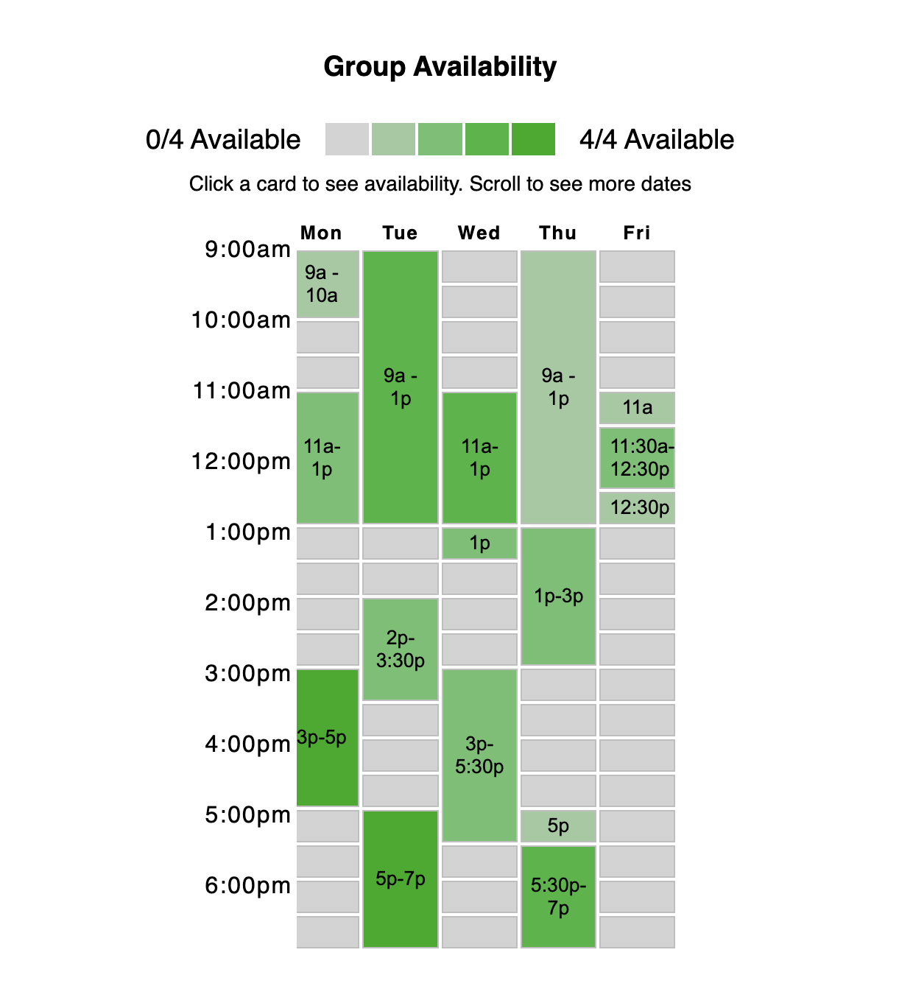

I decided to work on When2Meet, a scheduling and availability surveying platform that is commonly used (at least by my peers!)
Here's what it looks like when you click on the link (after signing in!)

And what it might look like on mobile!
I chose this website primarily because it provides a really useful tool: availability comparison at a glance, but has many interactive elements that are unintuitive or difficult to remember, even despite my frequent usage.
The primary WAVE Report errors come from missing attributes on things like language, input fields (text boxes), etc. These are definitely important things that aren't physically visible, but contribute to a more accessible and navigable interface.
The results also note that the hover-to-show interaction to show individual availability from Group Availability is device dependent and might not be accessible with just a keyboard. I think this is a very prescient observation that might indicate that an entire feature is inaccessible to certain users.
Here's 9 different speed sketch concepts for potential changes and redesigns.
The changes primarily focus on making elements look more clickable and more easily accessible
Here's the final sketch used to inspire the layout of my redesign
The desktop layout remains largely similar, but with inclusions of effects that make cells look more clickable
However, the mobile experience was redesigned to have a single availability matrix per screen so that the matrices appear bigger and are easier to interact with on mobile.

Here's my style guide!

However, the original website is really minimal
I thought it was really important to maintain the minimal aesthetics, because it really highlights the interactive elements and makes understanding the experience much simpler.
To some degree, I thoght that the utilitarian minimalism used by the website actually distinguished the page from other sites and made it more memorable.
My Responsive Redesign can be found at this link, while the code for it can be found here
Here's a screenshot of the redesigned page
And scrolling down
As was the case with the sketches, the layout for the desktop remains largely unchanged. Moreover, given that this project was implemented solely through HTML + CSS, functional buttons and dynamic pages weren't really possible.
However, one thing I did want to note was the more intuitive "clickability" of matrix elements. As demonstrated in the video below, I made "your availability" calendar slots clickable. I also condensed blocks of time in group availability where a consistent number of people are available, and made those condensed blocks clickable (ideally to bring up the availability lists).
Additionally, for the group availability matrix, each of the condensed time slots has text which describes the time range of availability. On top of that, these time slots also have aria labels which hopefully increase the accessibility of the site (as noted by the WAVE Report!)
Likewise, here's some screenshots for what the page might look like on mobile devices:
One of the biggest changes in the mobile layout was to change the layout to be a single long column. Consequently, each interface element is much bigger and easier to interact with.
Additionally, because it might be difficult to click on small availability blocks in the group matrix, I also included a Best Times section which (ideally) summarizes all the best slots without needing any extra clicks.
I did not actually work on implementing the toggle for this project (as illustrated in my wireframes). Though it would have made for an efficient, condensed interface, I simply ran out of time and thought that there would have been a really steep time investment to implement such an interface through pure HTML + CSS.
All in all, this was a really interesting process to go through and I think my redesign turned out quite well!
And though I redesigned the site in a way that I would like to use myself, I would be really interested in pursuing user interviews and creating personas to build a better product not just for myself but for a broad range of people.
Additionally, I also don't tend to work on projects fully alone, unlike this experience. I am left pretty curious about how my peers might have chosen to redesign certain aspects about the interface, and whether they would have leaned heavier into overhauling more and more elements to have a better differentiated experience.